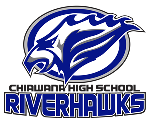

About me
Hello, welcome to my about my web page. Here on this main page, I have links that direct you to other pages relating to some of my favorite things in the world. Before you wander around the other pages, I'll tell you a little bit about me. My name is Isaiah Rodriguez, and I am currently a senior student at Chiawana High School. And I live in Pasco, a place of good weather. Now you can go ahead and click some of the web page links to discover what I enjoy and like.
